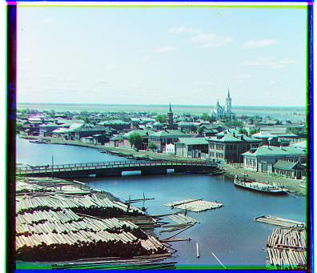
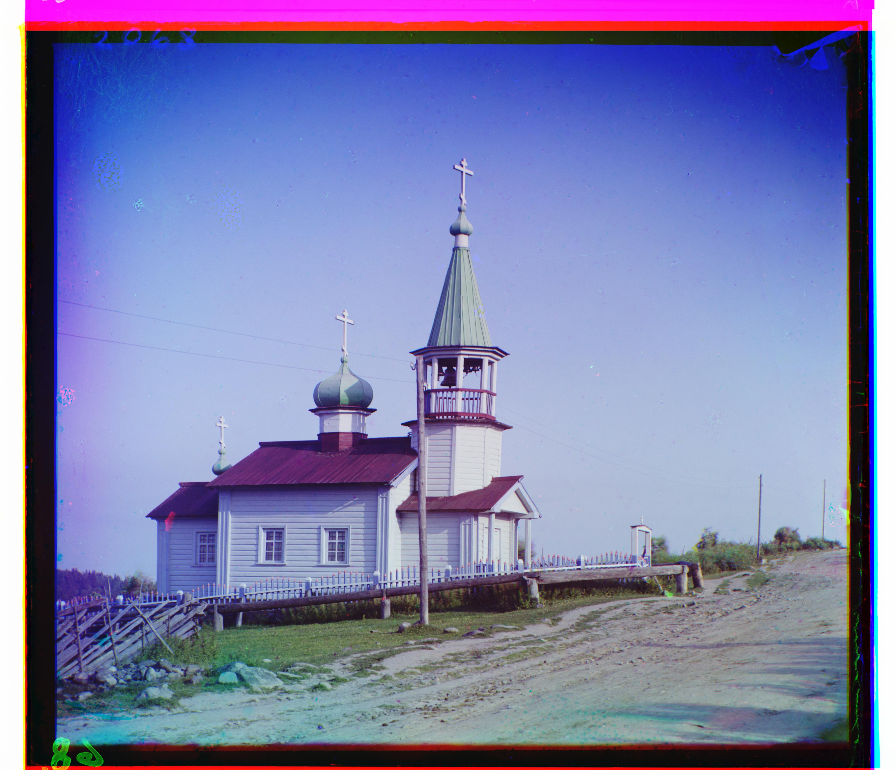
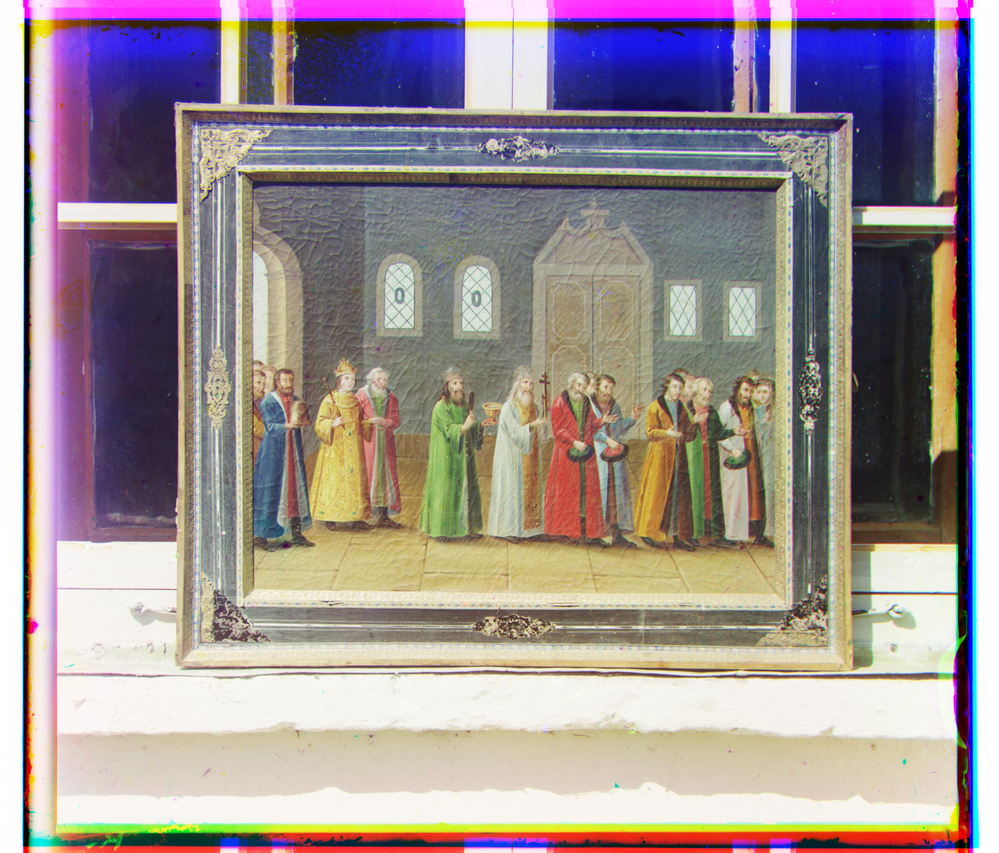
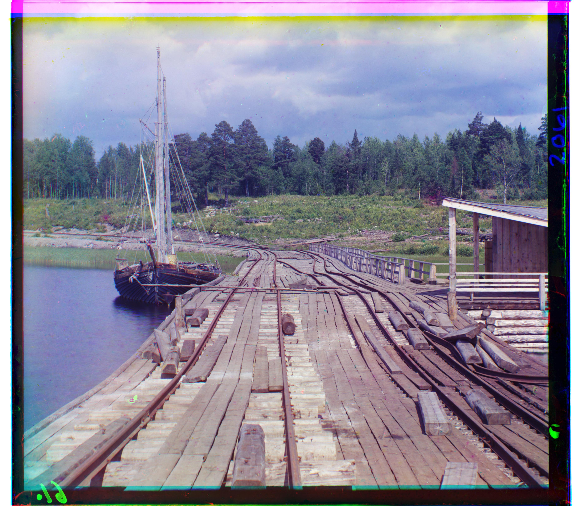
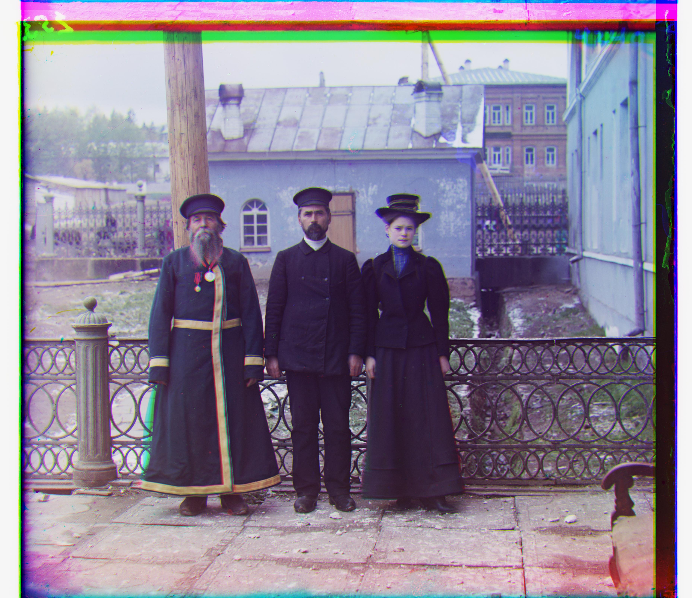
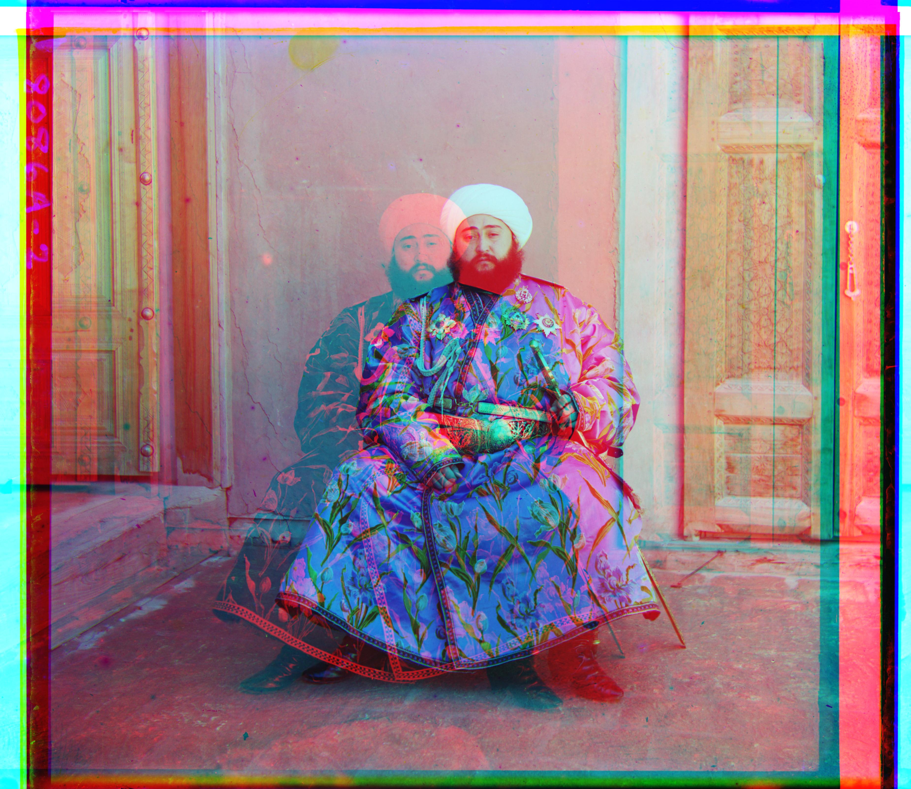
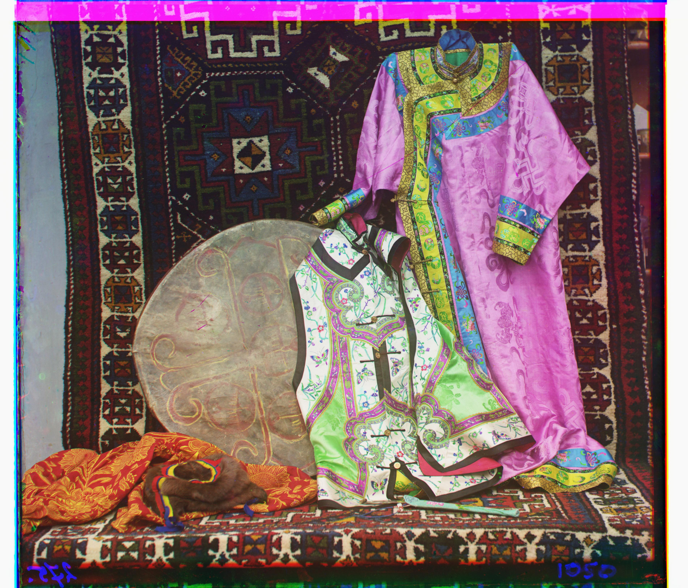
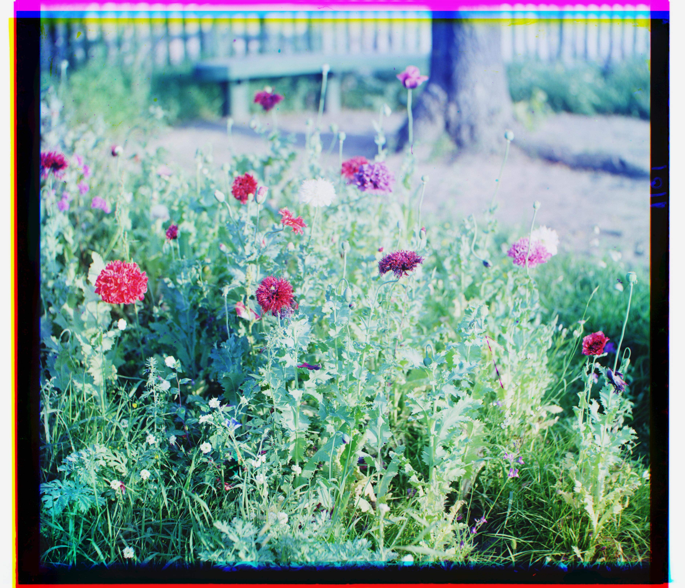
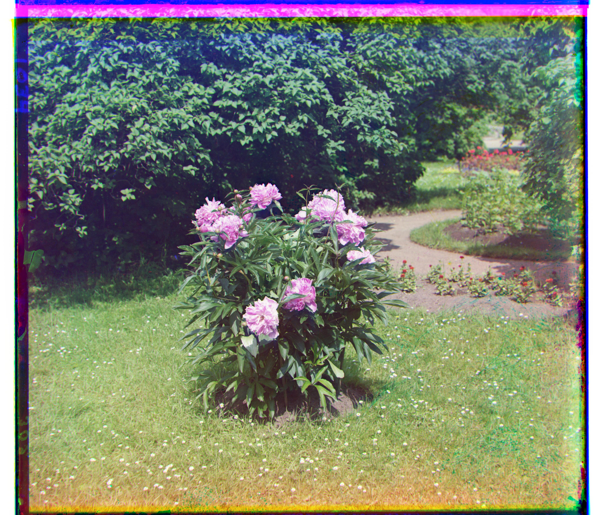

Cathedral
green (5, 2), red (12, 3)

Monastery
green (-3, 2), red (3, 2)

Tobolsk
green (3, 3), red (6, 3)
Sergei Prokudin-Gorskii captured color scenes in the early 1900s by photographing each scene three times through red, green, and blue filters, producing three separate exposures on a single glass plate. To reconstruct a color image, these three channels need to be aligned and stacked. This project implements that alignment automatically, using both a single-scale brute-force search and a multi-scale image pyramid for larger images.
For the smaller JPEG images, it was feasible to do an exhaustive search. Each image was split into three equal horizontal sections
(blue, green, red), and every displacement in a
[-20, 20] window was tested to find the best alignment
of green and red against blue.
I tried out two similarity metrics. L2 norm scores a candidate shift by the Euclidean distance between the shifted channel and blue, with the lowest distance winning. I also used Normalized Cross-Correlation (NCC) which mean-subtracts and normalizes both channels before taking their dot product, with the highest score winning. There wasn't a significant visual difference between the two, but I decided to use NCC, since it is less sensitive to brightness differences between channels than raw L2 distance.
The biggest adjustment to improve results was cropping. I cropped to the central 80% of each image before scoring. The raw plate borders contain scan artifacts and edge noise that are not part of the actual scene, and including them in the similarity calculation was distorting the search. The crop was used only for scoring; the resulting shift was still applied to the full image.
Cathedral
green (5, 2), red (12, 3)
Monastery
green (-3, 2), red (3, 2)

Tobolsk
green (3, 3), red (6, 3)
While an exhaustive search over [-20, 20] is inexpensive on a
small image, it took forever on the full-resolution glass
plate scans, since true displacements could be much larger and hence each
comparison was far more costly.
To handle this, I used a coarse-to-fine image pyramid. The image was downscaled, and a coarse search was performed at that resolution. The resulting estimate was then doubled and used as the starting point for a narrower refinement search at each successive, less-downscaled level, until the full resolution was reached. This replaced one expensive full-resolution search with a sequence of much cheaper searches at progressively finer scales. The same NCC-based scoring and central cropping from the single-scale version was used at every pyramid level.

Church
green (25, 4), red (58, -4)

Harvesters
green (60, 17), red (124, 13)
Icon
green (41, 17), red (89, 23)

Ilemselga
green (40, 7), red (130, 11)

Religious Painting
green (28, 3), red (68, 7)

Wharf
green (15, -7), red (83, -16)

Melons
green (82, 11), red (178, 13)

Self Portrait
green (79, 29), red (176, 37)

Siren
green (49, -6), red (96, -25)

Three Generations
green (53, 14), red (112, 11)

Emir
green (49, 24), red (144, -209)
The same pyramid pipeline was applied to three images I particularly liked from the Prokudin-Gorskii collection.

Kurmy
green (25, -18), red (116, -38)

Maki]
green (8, 8), red (60, 13)

Piony
green (51, 3), red (104, -6)
The pyramid alignment did not produce a clean result on
emir.tif. Instead of a sharp composite, the output
shows a double image.
Emir
green (49, 24), red (144, -209)
This is because raw-pixel NCC is less reliable when the brightness relationship between channels is inconsistent across the scene. As the project scope notes, in this image, the three channels do not share the same brightness values across matching regions, which caused the raw-pixel similarity metric to struggle.